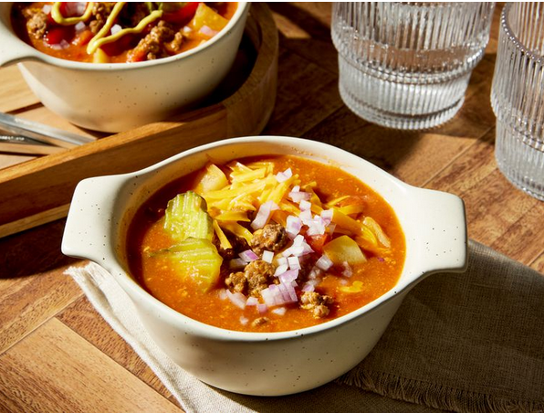

Home
Slow Cooker Cheeseburger Soup
Slow Cooker Cheeseburger Soup

Description
Use your slow cooker to make this easy cheeseburger soup. Don't skip the toppings - they make the soup!
Ingredients
- 1 pound ground beef
- 1/2 cup chopped yellow onion
- 2 1/2 cups lower sodium beef broth
- 2 russet potatoes, peeled and chopped
- 1 (14.5-ounce) can diced tomatoes, undrained
- 1 (10.5-ounce) can condensed Cheddar cheese soup
- 1 (8-ounce) can tomato sauce
- 1/4 cup ketchup, plus more for garnish
- 2 tablespoons yellow mustard, plus more for garnish
- 1 cup shredded Cheddar cheese, plus more for garnish
- 1/2 cup chopped dill pickle slices
- 1/4 cup finely chopped red onion
Steps
- Step 1: Cook ground beef and yellow onion in a large skillet over medium heat until browned, stirring to break up with a wooden spoon, about 8 minutes; drain fat.
- Step 2: Transfer beef mixture to a 4- to 5-quart slow cooker. Add beef broth, potatoes, tomatoes, soup, tomato paste, ketchup, and mustard. Stir to combine.
- Step 3: Cover and cook on Low 9 to 10 hours or on High 4 1/2 to 5 hours, until potatoes are tender.
- Step 4: Stir Cheddar cheese into the soup.
- Step 5: Garnish servings with pickles, red onion, additional cheese, ketchup and mustard.